Field notes / Computer architecture
Quantizationthrough the lens of CS61C
Where does floating point come into the picture?
From my handwritten notebook
Adapted from my handwritten notes, with edits for clarity and technical accuracy. The drawings are my original handwriting; the quantization-error number line is a digital addition.
CHAPTER 01Why floating points matter beyond an exam
As a TA for CS61C, I wanted to write this for students wondering something I also wondered when I took the class: where does floating point actually show up outside an exam?
If you’ve taken a 61C exam, you have probably converted a decimal number into IEEE 754 by hand:
- Determine the sign.
- Normalize the binary value.
- Calculate the biased exponent.
- Fill in the fraction bits.
With enough practice, you can get good at those steps and ace the exam question. But that still leaves the question I cared about as a student: what do we actually use this for?
Quantization is one example I want to connect back to 61C. The same choices about bits, precision, and range affect how much memory a model needs and how it runs on real hardware.
BUT, the format used to represent a number changes what a computer can do with it.
CS61C review
So far, we have seen fixed-point binary representations and IEEE 754 floating-point representations. As a quick review, a simple 6-bit representation in binary point for positive numbers is:
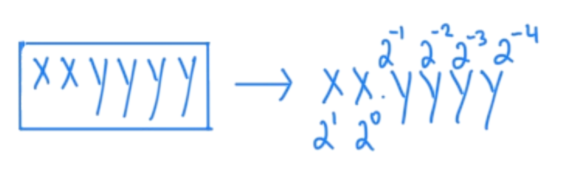
Read the diagram as text
The six bits xxyyyy are interpreted as xx.yyyy. From left to right, their place values are 21, 20, 2−1, 2−2, 2−3, and 2−4.
Floating point lets us store an approximation of a real number using binary scientific notation. Here I’m focusing on FP32, the 32-bit format we work with in CS61C.
A note on float and double
In C and C++, float is typically 32-bit and double is typically 64-bit. Java defines them as 32-bit and 64-bit, respectively. Python’s built-in float ordinarily uses double precision.
In CS61C, we teach the 32-bit IEEE 754 single-precision format:
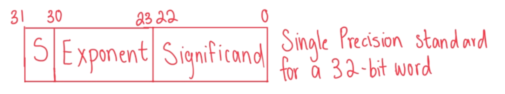
Read the diagram as text
An FP32 value occupies a 32-bit word:
- Bit 31: one sign bit.
- Bits 30–23: eight exponent bits.
- Bits 22–0: 23 fraction bits.
The handwritten label “Significand” refers to the stored fraction field. For normalized values, the full significand also includes the implicit leading 1.
I’ll call the stored field the fraction, although it is sometimes informally called the mantissa in class and online. For normalized values, the significand includes the implicit leading 1.
For normalized finite values, the decimal value is:
Here, s is the sign bit, f is the stored fraction, and e is the stored exponent. The bias is 127 for FP32. Zero, subnormal values, infinities, and NaNs need separate treatment.
Four things to consider
Given a fixed number of bits, we must decide how to divide them among the sign, exponent, and fraction. That decision affects four properties: range, precision, storage, and hardware execution.
- 01 / Range
- The span of magnitudes the format can represent.
- 02 / Precision
- How closely we can distinguish nearby values.
- 03 / Storage
- How many bytes every value occupies.
- 04 / Execution
- Hardware instructions that can process the value efficiently.
These choices have become very visible in machine learning. Modern models can contain millions or billions of parameters. Now if we follow the standard taught in 61C, then each numerical parameter occupies 4 bytes (32 bits).
What if each parameter used fewer bits?
Here’s some math: if we have a 1 billion parameter model, then it takes up
I’m counting weights and biases here, using decimal GB. This is just the space for the parameters—we’ll come back to the scales, KV cache, activations, and other memory the model needs to run.
What if each parameter occupied 2 bytes? In other words, what would happen if each numerical parameter was represented in 16 bits instead of 32? Then that would approximately halve the storage. And then what about one byte (8 bits)? It reduces the size again by ½ to 1 GB space.
These different representations change how much data overall must travel through memory and whether the processor has instructions designed for that datatype (32 bits, 16 bits, 8 bits, etc.).
This is why machine learning uses formats such as FP32, FP16, BF16, FP8, INT8. But what do all these names actually mean and why do we need so many formats? Are they simply just cutting off a few decimal places? Not exactly.
Each of these formats makes a different compromise in range, memory, precision, and hardware execution. Here’s a diagram of representing one of my favorite numbers (well, it’s in decimal in this case) in 3 ways:

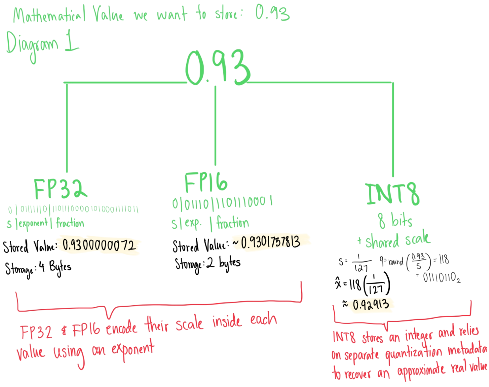
Read the diagram as text
The mathematical value 0.93 is approximated in three ways:
- FP32: approximately 0.9300000072, using 4 bytes.
- FP16: approximately 0.9301757813, using 2 bytes.
- INT8: integer code 118, using 1 byte plus shared scale metadata. With s = 1/127, q = round(0.93/s) = 118 and x̂ = 118/127 ≈ 0.92913. Code 118 is
01110110in binary.
FP32 and FP16 encode scale through each value’s exponent. INT8 uses separate quantization metadata to reconstruct an approximate real value.
CHAPTER 02Range vs precision
Here’s a quick review of floating point formats from CS61C: floating point formats are able to represent extremely large values and small differences between these nearby values by dividing their available bits into three fields:
For ordinary normalized values:
- s determines sign.
- e determines scale of the number.
- f determines precision within that scale.
A useful interpretation I tell students is that the exponent chooses the general “neighborhood” on this number line, while the fraction f chooses the specific position within that neighborhood.
There are tradeoffs with deciding between more bits for exponent or more bits for the fraction.
1. Exponent bits provide range
More exponent bits provide a wider range. This is why BF16 has approximately the same numerical range as FP32: both utilize 8 bits for the exponent.

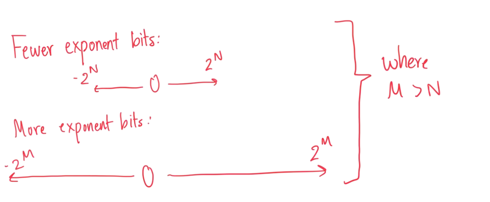
Read the diagram as text
The first number line illustrates a smaller range, with endpoints labeled −2N and 2N. The second illustrates a wider range, labeled −2M and 2M, where M > N. These are conceptual ranges: more exponent bits allow a wider span of magnitudes.
2. Fraction bits provide precision

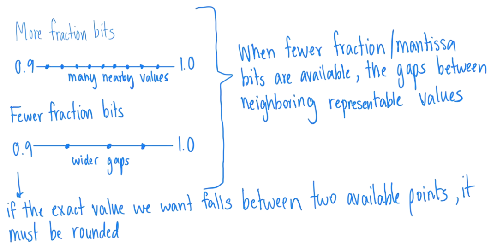
Read the diagram as text
Both number lines span 0.9 to 1.0. More fraction bits provide many closely spaced representable values. Fewer fraction bits leave wider gaps. If the exact value falls between two available points, it must be rounded.
The FP16 format stores 10 fraction bits, while BF16 stores seven. So BF16 instead spends more of its limited bit budget on exponent range.
- FP16: more fraction bits, narrower range.
- BF16: fewer fraction bits, wider range.
3. Total bits determine storage
The total width (bits) determines how much memory each stored value occupies:
| Format | Bits | Bytes per value |
|---|---|---|
| FP32 | 32 | 4 |
| FP16 / BF16 | 16 | 2 |
| FP8 / INT8 | 8 | 1 |
| INT4 | 4 | ½, when packed |
8-bit floating point formats (FP8) further push the same tradeoff as FP16 and BF16. For example, FP8 E4M3 (M denotes mantissa bits, still corresponding to the stored fraction field) has more bits for precision than E5M2. I’ll leave FP8 for now, so I can further explain the basics of quantization from here!
CHAPTER 03What quantization means
Now for the fun juicy stuff: quantization!
Quantization maps values from a larger set of possible numerical values onto a smaller set of representable values.
This can happen in many ways:
- An FP32 value can be rounded to a value representable in FP16, BF16, or FP8.
- A floating point can also be represented by an integer and a shared scale.
- Weights can be restricted to an EVEN smaller set, such as binary values {−1, +1} or ternary values {−1, 0, +1}.
FP32 → FP16: reducing floating-point precision
Consider 0.93. Its FP32 representation is
0 | 01111110 | 11011100001010001111011
s | exponent | fractionThis stored FP32 exponent is 126. Subtract bias of 127; the unbiased exponent is now 126 − 127 = −1.
FP16 must now represent the same exponent using its bias of 15: −1 + 15 = 14. 14 in five bits is 01110.
FP16 stores only 10 fraction bits instead of FP32’s 23. The fraction is shortened and rounded to 1101110001.
The resulting FP16 representation is:
0 | 01110 | 1101110001
s | exponent | fractionThis bit pattern now represents 0.93017578125. This conversion maps the FP32 approximation of 0.93 to the nearest available FP16 value. Next, let’s see how integer quantization works differently.
Floating point → INT8: integer codes and a shared scale
INT8 representation is different. Before applying a scale, adjacent representable INT8 values differ by 1 (−2, −1, 0, 1, 2, …). Signed INT8 stores integers from −128 to 127.
However, neural network weights often look like 0.037, −0.62, or of course 0.93 lol. So if hardware only supports INT8, how can an integer format store them?
We can’t just convert small weights to integers, that would just destroy most of the information: 0.93 → 1, 0.26 → 0, −0.26 → 0. Many different values will just collapse to a small integer.
The key idea here is an integer does not have to mean “one whole unit.”
If you have a scale s, then one integer step can instead represent a smaller real-valued interval.
Here, I assume symmetric quantization over approximately [−1, 1], using integer codes from −127 to 127. To map these endpoints, we’ll set the scale s to
Now we can interpret integer 1 as approximately 0.00787, 10 as 0.0787, 127 as 1.0.
To store 0.93, the q representation for INT8 would be
And to reconstruct we do

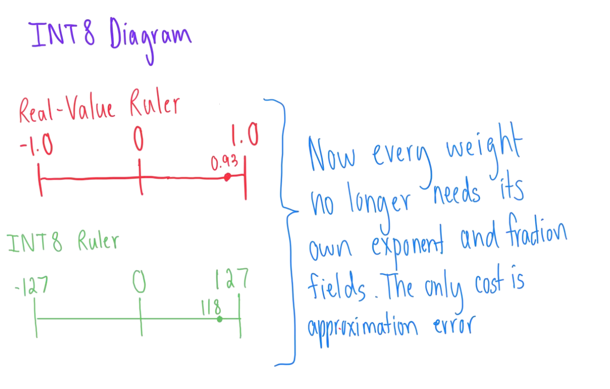
Read the diagram as text
The real-value ruler runs from −1 to 1, while the integer-code ruler runs from −127 to 127. With a shared scale of 1/127, the value 0.93 maps to code 118.
Individual weights no longer need their own exponent and fraction fields. The drawing highlights approximation error; shared scale metadata is also required.
With floating point, each value gets its own exponent. In this INT8 example, a group of values shares a scale instead. We save space, but we still have to store that scale, and we don’t get exactly 0.93 back.
Reconstruction and quantization error
Given an original weight w and scale s, we can calculate the integer to store as
For this example, zero stays zero, and I’m assuming the rounded code fits in our integer range. If it falls outside that range, we need to clip it. You may also see quantization formulas with an extra offset called a zero-point; I’m leaving that at 0 here.
Here, w is the original value, s is the scale, and q is the integer we store. To get an approximation of w back:
Reconstruction opens up one issue, which is quantization error: the difference between an original value and its reconstructed approximation, where
|ε| = |w − ŵ|
For a simple example, choose s = 0.1 with zero-point 0, and round to the nearest integer code:
| Original w | Code q | Reconstructed ŵ | |ε| |
|---|---|---|---|
| −0.26 | −3 | −0.30 | 0.04 |
| 0.04 | 0 | 0.00 | 0.04 |
| 0.73 | 7 | 0.70 | 0.03 |
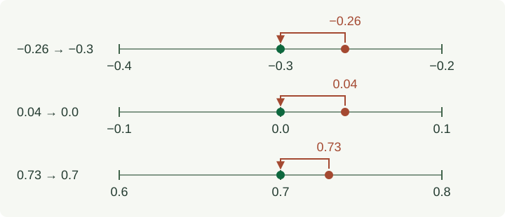
Quantization loses information because multiple original values can map to the same stored code. The scale determines the spacing between representable values and the range they cover: smaller steps can reduce rounding error, but cover a narrower range for a fixed integer width.
How widely should a scale be shared?

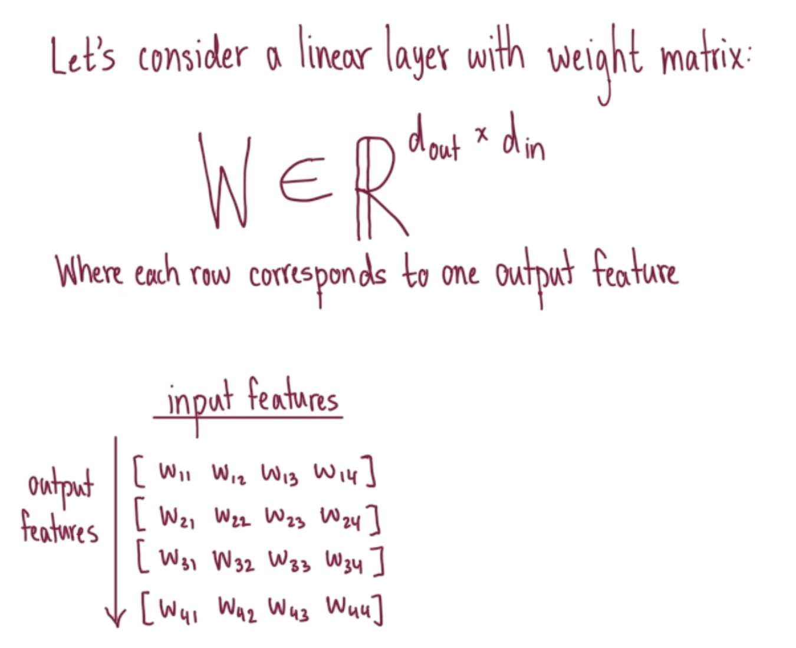
Read the diagram as text
Let’s consider a linear layer with weight matrix W ∈ ℝdout × din. Each row corresponds to one output feature, and each column to one input feature.
Input features →
w₁₁ w₁₂ w₁₃ w₁₄
w₂₁ w₂₂ w₂₃ w₂₄
w₃₁ w₃₂ w₃₃ w₃₄
w₄₁ w₄₂ w₄₃ w₄₄Output features run down the rows.
A scale can be applied at different levels of scale granularity:
Per-tensor scaling

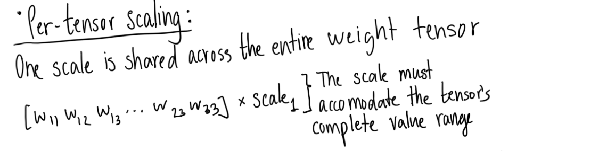
Read the diagram as text
One scale is shared across the entire weight tensor. The scale must accommodate the tensor’s complete value range.
Per-channel scaling

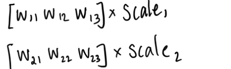
Read the diagram as text
Each channel receives a separate scale. In this row-wise example, [w₁₁, w₁₂, w₁₃] uses scale 1, while [w₂₁, w₂₂, w₂₃] uses scale 2.
We can share a scale down a column (an input channel) or across a row (an output channel). Many weight-quantization kernels use one scale per output channel. Which layout you can actually use depends on the runtime and hardware.
Group-wise scaling

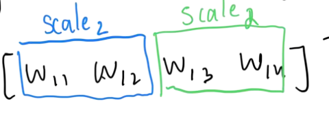
Read the diagram as text
Each channel is divided into smaller one-dimensional groups, each with its own scale. In the illustrated row, [w₁₁, w₁₂] is one group and [w₁₃, w₁₄] is another. The colored groups can have different scales, although both handwritten labels say “scale 2.”
Tile-wise scaling

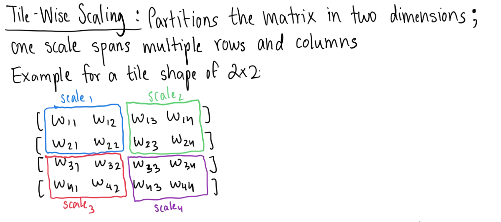
Read the diagram as text
Tile-wise scaling partitions the matrix in two dimensions. One scale spans multiple rows and columns. The illustrated four-by-four matrix has four two-by-two tiles:
- Scale 1: rows 1–2, columns 1–2.
- Scale 2: rows 1–2, columns 3–4.
- Scale 3: rows 3–4, columns 1–2.
- Scale 4: rows 3–4, columns 3–4.
Smaller groups let us choose a scale that better fits the values in each group. That can reduce error, but now we have more scales to store and apply.
- Larger groups → less metadata, potentially more error.
- Smaller groups → more metadata, potentially less error.
What parts of a model can be quantized?
During inference, three major categories are commonly quantized:
- Weights: learned parameters stored with the model.
- Activations: temporary intermediate tensors produced while processing the current input.
- KV cache: attention keys and values retained from earlier tokens so they do not need to be recomputed.
KV-cache memory grows with sequence length, batch size, and number of layers; it also depends on the model’s attention dimensions and the cache datatype.
Weight and activation precision
Quantized models are often described using WxAy notation, where W gives the weight bit width and A gives the activation bit width. Using different formats for different model components is a form of mixed-precision inference.
For example, in W8A16, weights can use INT8 to reduce storage and memory traffic, while activations may remain FP16 or BF16 because their input-dependent ranges can make low-bit integer quantization more difficult. Activations can also be quantized, as in the W8A8 example below.

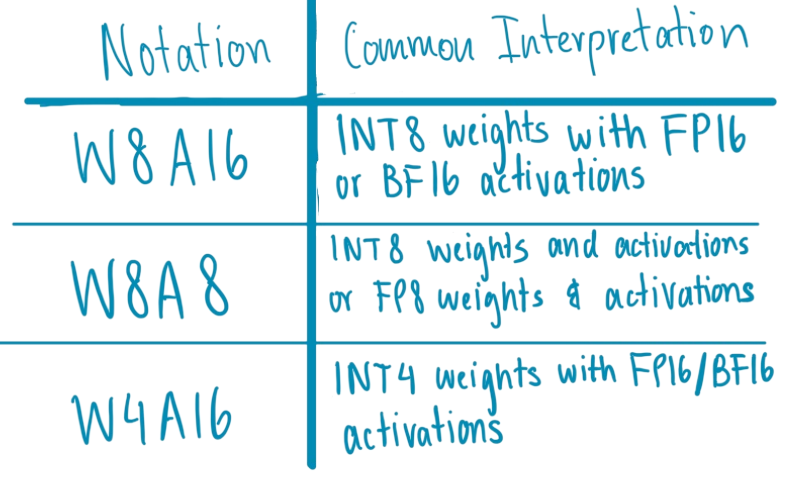
Read the table as text
| Notation | Common interpretation |
|---|---|
| W8A16 | INT8 weights with FP16 or BF16 activations |
| W8A8 | INT8 weights and activations, or FP8 weights and activations |
| W4A16 | INT4 weights with FP16 / BF16 activations |
The notation alone doesn’t specify the specific format; it only provides the bit width (8-bit, 16-bit, etc.).
So a system could use:
- Weights: INT8
- Activations: FP16
- KV cache: FP8
- Selected sensitive operations or accumulations: higher precision
CHAPTER 04The Costs and Benefits of fewer bits
During inference, a model’s learned parameters are normally loaded into system / accelerator memory and repeatedly read during execution.
| Format | Parameter storage |
|---|---|
| FP32 | ≈ 4 GB |
| FP16 / BF16 | ≈ 2 GB |
| INT8 | ≈ 1 GB |
| INT4 | ≈ 0.5 GB |
KV cache is created separately during inference, and stores keys and values from previously processed tokens. As the cache grows with sequence length, batch size, and number of layers, quantizing the KV cache reduces this request-dependent memory, but this is separate from the one billion parameter calculation above.
A simple breakdown is:
Connecting quantization to memory hierarchy
CS61C introduces us to the memory hierarchy:

Read the diagram as text
Storage → DRAM → cache / SRAM → registers → compute units.
The storage end is slower and larger; the register end is faster and smaller. Data must move through the hierarchy to reach the compute units.
Before a processor can operate on model parameters, the required data must reach its compute units, but moving all this data can take up a lot of time and energy.
Let’s say we have a 64-byte cache line. It can hold either 16 FP32 parameters or 64 INT8 parameters. The same cache line holds 4× as many INT8 parameters. So smaller representations can provide:
- Less parameter storage.
- Less data transferred from DRAM.
- More values fitting in each cache line.
- Less energy spent moving data.
However, a smaller representation DOES NOT automatically lead to faster execution.
The cost of using fewer bits
The runtime must be able to use the representation efficiently. Some costs include:
- Unpacking and dequantization: extracting packed low-bit values and reconstructing their approximate values when needed.
- Scale metadata and application: storing, loading, and applying shared scales.
- Datatype conversions: converting between the storage format and the format used for computation.
- Unsupported low-precision instructions: hardware may lack native operations for the chosen format.
- Inefficient kernels: an implementation may fail to use the hardware efficiently.
- Padding and alignment: extra storage or work may be needed to satisfy hardware-layout requirements.
- Higher-precision fallbacks: some operations may run in FP16, BF16, or FP32 instead.

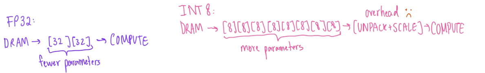
Read the diagram as text
In the FP32 illustration, a transfer carries two 32-bit parameters from DRAM toward compute. In the INT8 illustration, the same 64 bits carry eight parameters, followed by an unpack-and-scale step before compute. This extra step illustrates possible overhead, rather than a required path for every INT8 kernel.
This is the part I find interesting: making the model smaller doesn’t finish the job. We still have to check whether moving fewer bytes and using lower-precision arithmetic saves more time than unpacking, scaling, and conversion take.
CHAPTER 05Closing
As a CS61C TA, I want students to see what those floating-point exercises connect to. Quantization is one real-world use of the ideas we teach in class, and it’s the kind of connection I wanted when I was a student.
My interest in quantization grew from trying to understand why a model’s theoretical bit width does not always translate into proportional real-world speedups. A four-bit model may be smaller, but its performance still depends on packing, scales, kernels, memory movement, and hardware support. That’s the question I want to keep exploring.
The original handwritten notes
I wrote and drew these notes by hand on my iPad. Here are compressed copies of the original handwritten PDFs: